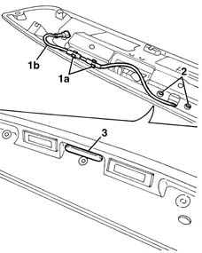

7015B60 EXTERIOR HANDLE for opening TAILGATE with switch for tailgate release - R.R.
- Path
- Procedures > 70 FITTINGS > 7015 TAILGATE/FLAP > 7015B TAILGATE LOCKING/OPENING DEVICES > 7015B60 EXTERIOR HANDLE for opening TAILGATE with switch for tailgate release - R.R.
- Kind
- repair procedure (removal / refitting; the operation number is the code)
- Applies to
- all engines; all production periods
- Interactive page
- https://sloeber94.github.io/elrnDB-fMltpl/en/#/2892127
Applies to: all engines; production: da 09/03, da 04/02 a 08/03
 Removing
Removing
 Refitting
Refitting7015A04 tailgate interior panel - r+r
5540A94 l/h or r/h number plate light (one) - r+r (right and left)
7055A54 NUMBERPLATE HOLDER - R+R
Open the left front door.
1. Disconnect the retainers (1a) from the bridge (1b) on the number plate holder.
2. Undo the bolts fixing the switch.
3. Remove the switch and bridge.

Applies to: all engines; production: da 09/03, da 04/02 a 08/03
Refitting
RemovingCheck that the switch is not damaged.
Place the switch and bridge in position.
Tighten the bolts.
Connect the bridge to the retainers.
7055A54 NUMBERPLATE HOLDER - R+R
5540A94 l/h or r/h number plate light (one) - r+r (right and left)
Topics linked from this page (3)
- 5540A94 l/h or r/h number plate light (one) - r+r
- 7015A04 tailgate interior panel - r+r
- 7055A54 NUMBERPLATE HOLDER - R+R